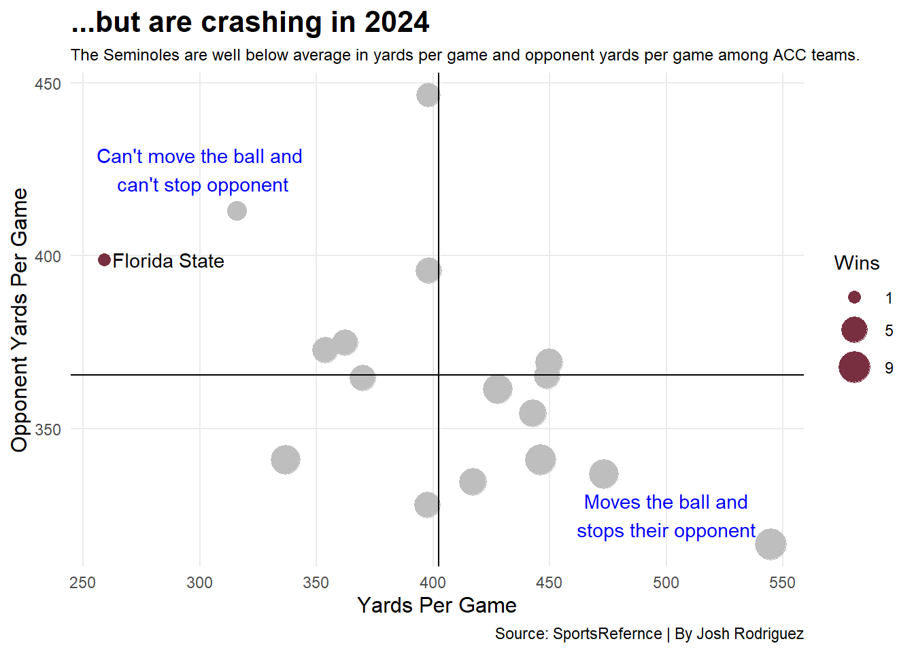
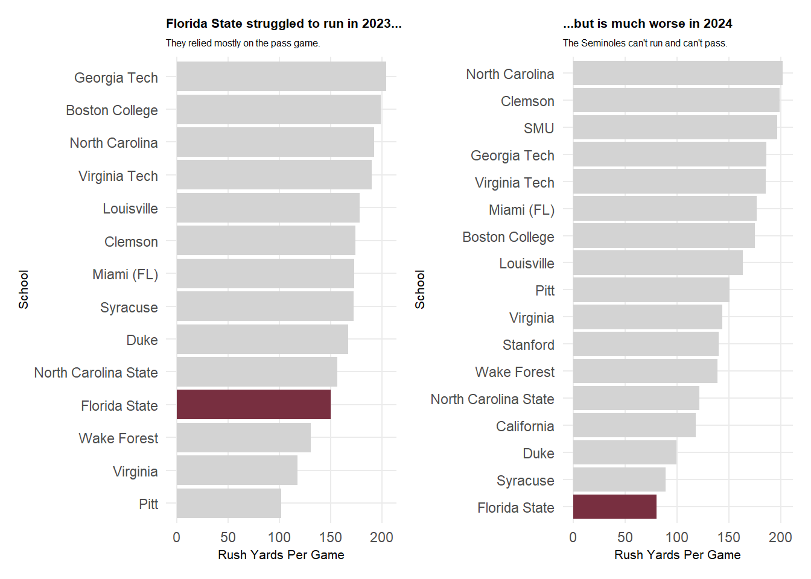

Why Florida State Football fell apart from 2023 to 2024
ncaa
football
Florida State
Published
November 14, 2024
Florida State was 13-0. They had just won the ACC Championship. An undefeated team from a power five conference had never been left out of the four-team College Football Playoff since its inception in 2014. Surely they were in?
Except they weren’t.
Both 12-1 Texas and 12-1 Alabama got in instead of the Seminoles.
Many players opted out for Florida State, which led to a 63-3 loss to Georgia in the Orange Bowl, the largest margin of defeat in any bowl game ever.
Still, expectations were fairly high for the Seminoles going into 2023. They were ranked 10th in the preseason AP Top 25. There was hope that transfer quarterback DJ Uiagalelei could lead Florida State to another ACC Championship and a spot in the newly expanded 12-team College Football Playoff.
But that isn’t happening. Not by a long shot.
Instead of competing for a spot in the College Football Playoff, the Seminoles are in the discussion of being the worst power conference team.
Going into week 12, Florida State sits at a horrible 1-9 overall, and 1-7 in ACC play.
Side note: The Seminoles schedule is set up very weird. Eight of their first nine games were against ACC opponents, and their last three are non-conference games. I have never seen something like that, outside of the wacky 2020 season.
What happened to Florida State? How did they go from being on the doorstep of the College Football Playoff to being perhaps the worst power conference team in the span of just one season?
First, we will look at their scoring offense and scoring defense. In the end, this is the only stat that truly matters. If you move the ball and can’t finish it off with a score, all those yards don’t matter.
In 2023, Florida State had the top scoring offense in the ACC, averaging 34.6 points per game. Let’s take a look at how that changed from 2023 to 2024.
All data for 2024 is from games played through week 11.
Code
library(tidyverse)library(patchwork)library(gt)library(ggrepel)accfb <-read_csv("data/accfb_data.csv")ppg <- accfb |>select(School, Season, OffPPG, DefPPG)fsuppg <- ppg |>filter (School =="Florida State")ggplot() +geom_line(data = ppg, aes(x = Season, y = OffPPG, group = School ), color ="grey" ) +geom_point(data = ppg, aes(x = Season, y = OffPPG, group = School ), color ="grey" ) +geom_line(data = fsuppg, aes(x = Season, y = OffPPG, group = School ), color ="#782F40" ) +geom_point(data = fsuppg, aes(x = Season, y = OffPPG, group = School ), color ="#782F40" ) +geom_text(data = fsuppg |>filter(Season ==max(Season)),aes(x = Season + .15, y = OffPPG + .15, group = School, label = School ) ) +geom_text(data = fsuppg |>filter(Season ==min(Season)),aes(x = Season - .15, y = OffPPG - .15, group = School, label = School ) ) +scale_x_continuous(breaks=c(2023, 2024), limits=c(2022.75, 2024.25) ) +theme_minimal() +labs(x ="",y ="Offensive Points Per Game", title ="Florida State's offense plummeted from 2023 to 2024",subtitle ="The Seminoles have the worst scoring offense by far in the ACC in 2024.",caption="Source: Sports Reference | By Josh Rodriguez" ) +theme(plot.title =element_text(size =16, face ="bold"),plot.subtitle =element_text(size =12),axis.title =element_text(size =12),panel.grid.minor =element_blank())
As you can see, the Seminoles scoring offense didn’t just fall a little bit. It absolutely fell off a cliff. Florida State is averaging a truly horrifying 13.3 points per game. The second worst team in the ACC in scoring, Stanford, is averaging 20.4 points per game.
In fact, the Seminoles don’t just have the worst scoring offense in the ACC. They have the worst scoring offense in all of FBS, even worse than winless Kent State.
They haven’t scored 20 points in a game since their week 0 game against Georgia Tech in Ireland.
No matter how you slice it, it’s really bad.
Next, we will take a look at Florida State’s scoring defense.
Code
ggplot() +geom_line(data = ppg, aes(x = Season, y = DefPPG, group = School ), color ="grey" ) +geom_point(data = ppg, aes(x = Season, y = DefPPG, group = School ), color ="grey" ) +geom_line(data = fsuppg, aes(x = Season, y = DefPPG, group = School ), color ="#782F40" ) +geom_point(data = fsuppg, aes(x = Season, y = DefPPG, group = School ), color ="#782F40" ) +geom_text(data = fsuppg |>filter(Season ==max(Season)),aes(x = Season + .15, y = DefPPG + .15, group = School, label = School ) ) +geom_text(data = fsuppg |>filter(Season ==min(Season)),aes(x = Season - .15, y = DefPPG - .15, group = School, label = School ) ) +scale_x_continuous(breaks=c(2023, 2024), limits=c(2022.75, 2024.25) ) +scale_y_reverse()+theme_minimal() +labs(x ="",y ="Opponent Points Per Game", title ="Florida State's scoring defense faltered from 2023 to 2024 among ACC teams",subtitle ="A smaller dropoff than the offense, but a signigicant one nonetheless.",caption="Source: Sports Reference | By Josh Rodriguez" ) +theme(plot.title =element_text(size =12, face ="bold"),plot.subtitle =element_text(size =11),axis.title =element_text(size =12),panel.grid.minor =element_blank())
The Seminoles scoring defense also fell way off. In 2023, they gave up just 19.3 points per game, which was second in the ACC. If you take out the Orange Bowl, where they gave up 63 points after much of their team opted out, they gave up just 15.9 points per game, best in the ACC.
In 2024, Florida State is giving up 29.8 points per game, which is fourth worst in the newly expanded 17-team ACC.
While this is certainly a big drop-off, it isn’t as big as their offensive scoring drop-off. In fact, you could make the argument that their defense is being put in a bad position by their inept offense. Based on this, it seems that their offense is more to blame for their collapse, though the defense is also at fault.
Still, let’s look at more data of their collapse.
While scoring is the most important stat, yards are still a good indicator of a team’s success.
Let’s take a look at where the Seminoles were in yards per game from 2023 to 2024 among ACC teams.
Code
firstypg <- accfb |>select(School, Season, OffTotalYds, DefTotYds)|>filter (Season =="2023")|>arrange(desc(OffTotalYds))secondypg <- accfb |>select(School, Season, OffTotalYds, DefTotYds)|>filter (Season =="2024")|>arrange(desc(OffTotalYds))firstypg |>gt() |>cols_label(OffTotalYds ="Yards Per Game",DefTotYds ="Opponent Yards Per Game" ) |>tab_header(title ="Florida State moved the ball and stopped their opponents in 2023...",subtitle ="The Seminoles were sixth in yards per game and fifth in opponent yards per game among ACC teams." ) |>tab_style(style =cell_text(color ="black", weight ="bold", align ="left"),locations =cells_title("title") ) |>tab_style(style =cell_text(color ="black", align ="left"),locations =cells_title("subtitle") ) |>tab_source_note(source_note =md("**By:** Josh Rodriguez | **Source:** Sports Reference") ) |>tab_style(locations =cells_column_labels(columns =everything()),style =list(cell_borders(sides ="bottom", weight =px(3)),cell_text(weight ="bold", size =12) ) ) |>tab_style(locations =cells_column_labels(columns =everything()),style =list(cell_borders(sides ="bottom", weight =px(3)),cell_text(weight ="bold", size =12) ) ) |>opt_row_striping() |>opt_table_lines("none") |>fmt_number(columns =c(OffTotalYds),decimals =1 ) |>tab_style(style =list(cell_fill(color ="#782F40"),cell_text(color ="#CEB888") ),locations =cells_body(rows = School =="Florida State" ) )
Florida State moved the ball and stopped their opponents in 2023...
The Seminoles were sixth in yards per game and fifth in opponent yards per game among ACC teams.
School
Season
Yards Per Game
Opponent Yards Per Game
North Carolina
2023
491.2
404.4
Miami (FL)
2023
431.2
321.6
Georgia Tech
2023
424.6
437.1
Louisville
2023
415.1
317.1
Clemson
2023
402.7
287.8
Florida State
2023
401.6
331.9
Virginia Tech
2023
391.5
316.8
Boston College
2023
381.2
385.1
Virginia
2023
368.8
409.3
North Carolina State
2023
350.4
332.1
Duke
2023
348.1
352.7
Syracuse
2023
343.3
380.5
Wake Forest
2023
327.8
386.7
Pitt
2023
317.9
361.6
By: Josh Rodriguez | Source: Sports Reference
Code
secondypg |>gt() |>cols_label(OffTotalYds ="Yards Per Game",DefTotYds ="Opponent Yards Per Game" ) |>tab_header(title ="...but can't move the ball and can't stop their opponent in 2024",subtitle ="The Seminoles are dead last in yards per game and third worst in opponent yards per game among ACC teams." ) |>tab_style(style =cell_text(color ="black", weight ="bold", align ="left"),locations =cells_title("title") ) |>tab_style(style =cell_text(color ="black", align ="left"),locations =cells_title("subtitle") ) |>tab_source_note(source_note =md("**By:** Josh Rodriguez | **Source:** Sports Reference") ) |>tab_style(locations =cells_column_labels(columns =everything()),style =list(cell_borders(sides ="bottom", weight =px(3)),cell_text(weight ="bold", size =12) ) ) |>tab_style(locations =cells_column_labels(columns =everything()),style =list(cell_borders(sides ="bottom", weight =px(3)),cell_text(weight ="bold", size =12) ) ) |>opt_row_striping() |>opt_table_lines("none") |>fmt_number(columns =c(OffTotalYds),decimals =1 ) |>tab_style(style =list(cell_fill(color ="#782F40"),cell_text(color ="#CEB888") ),locations =cells_body(rows = School =="Florida State" ) )
...but can't move the ball and can't stop their opponent in 2024
The Seminoles are dead last in yards per game and third worst in opponent yards per game among ACC teams.
School
Season
Yards Per Game
Opponent Yards Per Game
Miami (FL)
2024
544.8
316.6
Clemson
2024
473.4
336.7
Louisville
2024
449.6
369.1
North Carolina
2024
448.8
365.3
SMU
2024
446.1
341.0
Syracuse
2024
442.8
354.4
Pitt
2024
427.8
361.4
Georgia Tech
2024
417.1
334.6
Virginia
2024
398.2
395.8
Wake Forest
2024
398.1
446.3
California
2024
397.6
327.9
Virginia Tech
2024
369.9
364.6
North Carolina State
2024
362.1
374.9
Boston College
2024
353.8
372.7
Duke
2024
336.9
341.0
Stanford
2024
315.9
412.9
Florida State
2024
258.9
398.8
By: Josh Rodriguez | Source: Sports Reference
As you can see, Florida State was in the top-half of the ACC in both yards per game and opponents yards per game. In 2024, the offense, unsurprisingly, is dead last, while their defense is also near the bottom.
Again, this points towards both sides of the ball being to blame for their collapse. However, just like with scoring, it seems that their offense is more to blame than their defense.
The following is another way to see their collapse in terms of yards. The vertical line is the average yards per game for each ACC team and the horizontal line is the average yards each ACC team gives up. Each dot represents an ACC team, with the size of the dot being determined by their number of wins.
Code
firstbubble <- accfb |>select(School, Season, OffTotalYds, DefTotYds, Wins) |>filter (Season =="2023")fsufirstbubble <- firstbubble|>filter (School =="Florida State")secondbubble <- accfb |>select(School, Season, OffTotalYds, DefTotYds, Wins) |>filter (Season =="2024")fsusecondbubble <- secondbubble|>filter (School =="Florida State")ggplot() +geom_point(data = firstbubble,aes(x = OffTotalYds, y = DefTotYds, size = Wins ) ) +geom_point(data = fsufirstbubble,aes(x = OffTotalYds, y = DefTotYds, size = Wins),color ="#782F40" ) +geom_text_repel(data = fsufirstbubble, aes(x = OffTotalYds, y = DefTotYds, label = School ) ) +geom_vline(xintercept =385.39) +geom_hline(yintercept =358.91) +geom_text(aes(x=460, y=300, label="Moves the ball and\nstops their opponent"), color="blue") +geom_text(aes(x=350, y=425, label="Can't move the ball and\n can't stop opponent"), color="blue") +scale_size(range =c(3, 8), breaks=c(5, 9, 13), name ="Wins") +labs(x ="Yards Per Game",y ="Opponent Yards Per Game",title ="Florida State rode both sides of the ball in 2023... ",subtitle ="The Seminoles were above average in yards per game and opponents yards per game among ACC teams",caption ="Source: SportsRefernce | By Josh Rodriguez" ) +theme_minimal() +theme(plot.title =element_text(size =15, face ="bold"),axis.title =element_text(size =12), plot.subtitle =element_text(size =10), panel.grid.minor =element_blank() )
Code
ggplot() +geom_point(data = secondbubble,aes(x = OffTotalYds, y = DefTotYds, size = Wins ) ) +geom_point(data = fsusecondbubble,aes(x = OffTotalYds, y = DefTotYds, size = Wins),color ="#782F40" ) +geom_text_repel(data = fsusecondbubble, aes(x = OffTotalYds, y = DefTotYds, label = School ) ) +geom_vline(xintercept =402.46) +geom_hline(yintercept =365.53) +geom_text(aes(x=500, y=325, label="Moves the ball and\nstops their opponent"), color="blue") +geom_text(aes(x=300, y=425, label="Can't move the ball and\n can't stop opponent"), color="blue") +scale_size(range =c(3, 8), breaks=c(1, 5, 9), name ="Wins") +labs(x ="Yards Per Game",y ="Opponent Yards Per Game",title ="...but are crashing in 2024",subtitle ="The Seminoles are well below average in yards per game and opponent yards per game",caption ="Source: SportsRefernce | By Josh Rodriguez" ) +theme_minimal() +theme(plot.title =element_text(size =16, face ="bold"),axis.title =element_text(size =12), plot.subtitle =element_text(size =10), panel.grid.minor =element_blank() )

Again, Florida State went from above average to well below average in terms of yards per game and opponent yards per game from 2023 to 2024. However, the offense is in a much worse spot than the defense, despite both being in bad shape.
Seeing that their offense is more to blame than their defense, let’s compare where the Seminoles were in terms of passing yards per game among ACC teams from 2023 to 2024
Code
firstpass <- accfb |>select(School, Season, OffPassYds) |>filter (Season =="2023")fsufirstpass <-firstpass |>filter (School =="Florida State")secondpass <- accfb |>select(School, Season, OffPassYds) |>filter (Season =="2024")fsusecondpass <-secondpass |>filter (School =="Florida State")firstrush <- accfb |>select(School, Season, OffRushYds) |>filter (Season =="2023")fsufirstrush <-firstrush |>filter (School =="Florida State")secondrush <- accfb |>select(School, Season, OffRushYds) |>filter (Season =="2024")fsusecondrush <-secondrush |>filter (School =="Florida State")passbar1 <-ggplot() +geom_bar(data=firstpass, aes(x=reorder(School, OffPassYds), weight=OffPassYds)) +geom_bar(data=fsufirstpass, aes(x=reorder(School, OffPassYds), weight=OffPassYds), fill="#782F40")+coord_flip() +labs(title ="Florida State let the ball fly in 2023...",subtitle ="Jordan Travis was a top tier quarterback.",x ="School", y ="Pass Yards Per Game" ) +theme_minimal() +theme(plot.title =element_text(size =8, face ="bold"),axis.title =element_text(size =8), plot.subtitle =element_text(size =6), panel.grid.minor =element_blank() )passbar2 <-ggplot() +geom_bar(data=secondpass, aes(x=reorder(School, OffPassYds), weight=OffPassYds)) +geom_bar(data=fsusecondpass, aes(x=reorder(School, OffPassYds), weight=OffPassYds), fill="#782F40")+coord_flip() +labs(title ="...but is stuck on the runway in 2024",subtitle ="No quarterback is having much success.",x ="School", y ="Pass Yards Per Game" ) +theme_minimal() +theme(plot.title =element_text(size =8, face ="bold"),axis.title =element_text(size =8), plot.subtitle =element_text(size =6), panel.grid.minor =element_blank() )passbar1+passbar2
As you can see, Florida State passed the ball very well in 2023. Jordan Travis was one of the best quarterbacks in the nation in 2023 before he got hurt.
In 2024, the Seminoles are second worst in the ACC, ahead of only Stanford. DJ Uiagalelei was very disappointing, and his replacement, Brock Glenn, isn’t doing any better.
Now let’s see where they went in terms of rush yards per game from 2023 to 2024 among ACC teams.
Code
rushbar1 <-ggplot() +geom_bar(data=firstrush, aes(x=reorder(School, OffRushYds), weight=OffRushYds)) +geom_bar(data=fsufirstrush, aes(x=reorder(School, OffRushYds), weight=OffRushYds), fill ="#782F40")+coord_flip() +labs(title ="Florida State struggled to run in 2023...",subtitle ="They relied mostly on the pass game.",x ="School", y ="Rush Yards Per Game" ) +theme_minimal() +theme(plot.title =element_text(size =8, face ="bold"),axis.title =element_text(size =8), plot.subtitle =element_text(size =6), panel.grid.minor =element_blank() )rushbar2 <-ggplot() +geom_bar(data=secondrush, aes(x=reorder(School, OffRushYds), weight=OffRushYds)) +geom_bar(data=fsusecondrush, aes(x=reorder(School, OffRushYds), weight=OffRushYds), fill ="#782F40")+coord_flip() +labs(title ="...but is much worse in 2024",subtitle ="The Seminoles can't run and can't pass",x ="School", y ="Rush Yards Per Game" ) +theme_minimal() +theme(plot.title =element_text(size =8, face ="bold"),axis.title =element_text(size =8), plot.subtitle =element_text(size =6), panel.grid.minor =element_blank() )rushbar1+rushbar2

As you can see, Florida State was in the bottom of the ACC in terms of rush yards per game in 2023, averaging 150.2 rush yards per game. They relied on their strong passing game to almost get to the playoff. In 2024, they are much, much worse. They are dead last in the ACC with just 80.5 rush yards per game.
Based on those charts, we can see that, even though the Seminole’s rushing attack got worse in 2024, they didn’t rely on it for their offensive success in 2023. They did rely on the passing game, which has gone from top to bottom.
So what has caused Florida State’s plummet from 2023 to 2024. Well, to be honest, it’s basically everything. Everything has gotten worse. You don’t go from almost in the playoff to arguably the worst power conference team in one season because just one or two things go wrong. That happens because almost everything has gotten worse.
However, if you want to find the biggest culprit, you can point to the Seminoles’ pass offense. Yes, their rushing offense got much worse. But they weren’t relying on that when they were successful. Yes, their defense got a lot worse. In fact, they actually have the worst rush defense in the ACC. But one could argue that the offense consistently puts the defense in a bad spot, making a poor defense look even worse.
Like I said, just because the pass defense being the biggest culprit for Florida State’s collapse doesn’t mean every other aspect of their game doesn’t also contribute to their dreadful season.
Finally, I want to pose a question. Did being snubbed from the playoff in 2023 simply break the Florida State Football program?
The entire team was shocked and angry at being left out. Getting destroyed in the Orange Bowl also left a stain on the program.
One has to wonder if the psyche of the coaching staff and returning players was destroyed from the snub. They must have felt like they did everything right and weren’t rewarded for it. Would they have collapsed so hard if they did make the playoff, even if they lost badly in that game?
Personally, I think that has a part to do with it. But again, there isn’t just one thing that has contributed to their historic season-to-season collapse. Everything has gone wrong for Florida State in 2024.